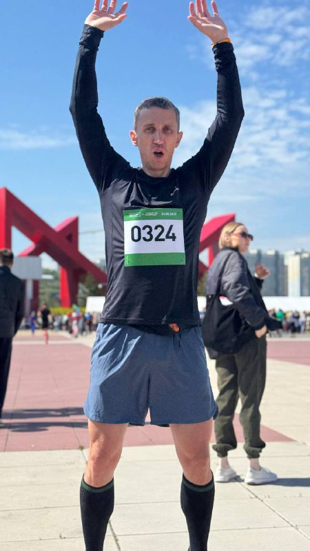
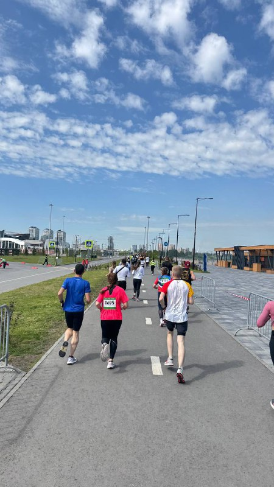
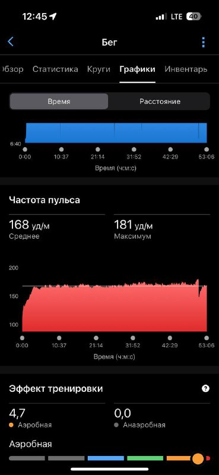

Всей семьёй, кроме сыночка, приняли участие в «Зелёном марафоне», который ежегодно проводит Сбер.
У нас с «Зелёным марафоном» есть кое-какая совместная история. Дело в том, что я раньше был известным в узких кругах блогером, и блогеров было принято звать на всякие мероприятия. Вот меня Сбербанк и позвал пробежать 3 километра по парку Жукова на первом «Зелёном марафоне» году, кажется, в 2012-м.
Сегодня звать уже никого не надо, люди охотно бегают сами.
Доченьку вписали на дистанцию 800 метров, это максимум для детей. Наташа вызвалась пробежать 4,2 км. Ну а мне ничего не осталось, кроме как бежать «десятку». Там ещё была скандинавская ходьба для пожилых, но я забыл где кинул свои палки.
Бежать решил размеренно, не ставя рекордов, по пульсу. В четвёртой пульсовой зоне 😂. Спокойно сделал это, правда без личного рекорда не обошлось. Пробежал с темпом 5:18.
Первое надоразумение возникло до старта. В четверг у меня был жёсткий день ног, и на старт я выходил без ног. Без обеих. Они отказывали.
Второе недоразумение возникло на финише. Вместо 10 километров, заявленных организаторами, на часах вышло 9,7. Пришлось пробежать ещё 300 метров, но, думаю, бегуны меня поймут 🤗.
Всё понравилось, буду бегать ещё.


